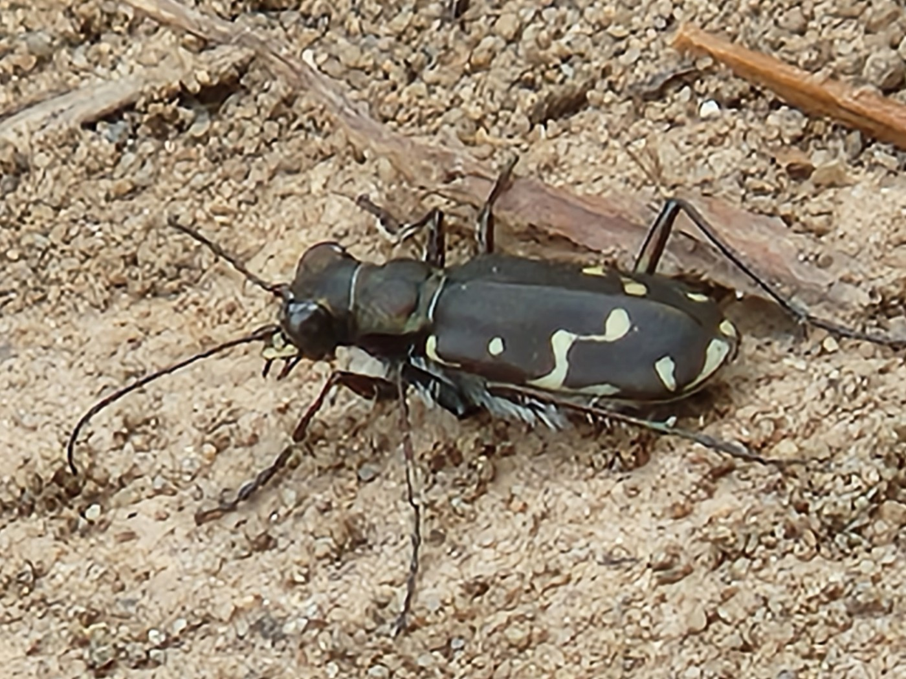
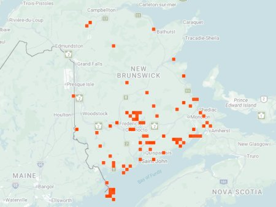

photo: Rebecca McCluskey, July 30, 2022

Distribution map (based on iNaturalist observations)
Identification
- Medium-sized (11–14 mm), dark bronze to green with 12 distinct white spots on elytra.
- Metallic reflections; long legs for fast running on open ground.
- Active in spring and fall; often on muddy or sandy riverbanks.
Habitat in New Brunswick
Prefers muddy or sandy riverbanks, lake shores, roadsides, and disturbed wet areas with bare ground. Thrives in moist, open sites near water.
Flight Season in NB
April 18 – October 4 (spring–fall; peaks May–June and Aug–Sep).
Distribution & Notes
Widespread across New Brunswick, especially along river valleys and lake shores. One of the most commonly encountered species with two activity peaks. Populations often abundant on suitable muddy/sandy edges.